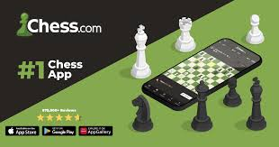

Chess.com es un servidor de ajedrez en Internet, un sitio web de noticias y un sitio web de redes sociales.1 El sitio tiene un modelo freemium en el que algunas funciones están disponibles de forma gratuita y otras para cuentas con suscripciones. El ajedrez en línea en vivo se puede jugar contra otros usuarios en controles diarios, rápidos, blitz o de bala, con varias variantes de ajedrez disponibles.
Una de las plataformas de ajedrez más grandes del mundo,2 Chess.com ha organizado torneos en línea que incluyen Titled Tuesdays, PRO Chess League, Speed Chess Championships, PogChamps y eventos de computadora contra computadora.
